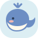

聊正经的，也聊有的没的。
接上自己的 OpenAI API Key，就能和她聊聊今天。角色人设、最近的对话和相关记忆，会一起带进聊天里。
文字聊天 · 需要联网与自己的 Key
Alice小小鲸屿桌面陪伴计划 · 正在慢慢长大
这是 Alice，一只住进日常的 AI 鲸鱼娘。
能陪你认真聊，也能一起发呆。
没网的时候，小日子照样过。
Mac 测试版已出炉，岛上欢迎第一批居民。
你来啦。给你留了个位置。
Alice · 陪你待一会儿
↑ 可以戳戳她 · 网页台词为预设互动，正式聊天在客户端
01 / 先混个脸熟
你喜欢直球一点，还是慢慢熟悉？
选个合拍的开场。以后想换，也随时可以。
换的是相处方式，一起攒下的记忆还在。示例台词，非实时 AI 回复
02 / 一起虚度一点时间
赛博养鲸这件事，
可以很简单。
小岛备忘录
想让她记住的，就留下。
不想再提的，也可以删掉。
这本小本子，由你做主。
接上自己的 OpenAI API Key，就能和她聊聊今天。角色人设、最近的对话和相关记忆，会一起带进聊天里。
文字聊天 · 需要联网与自己的 Key摸摸、喝茶、休息、找珍珠。离线时还有本地的小日常，有一点小时候养电子宠物的意思。
离线互动 · 不消耗 API挥手、眨眼、侧耳听、想事情，再到捧着杯子吨吨吨。七种动画，让小小的窗口热闹一点。
7 组动画 · 简洁的单角色界面03 / 岛上见
第一版还小，偶尔可能犯点迷糊。
欢迎来试玩，顺便一起把小岛养大。
在最近一次成功构建的 Artifacts 中下载，需登录 GitHub。
解压里面的应用 ZIP，把 Alice.app 拖进“应用程序”就好。
Mac 测试版尚未经过 Apple 公证。首次打开若被拦住，可在“系统设置 → 隐私与安全性”允许打开。详细说明 ↗
登岛前的小问号
有一说一，都写在这里。
不需要。聊天需要网络和自己的 OpenAI API Key；摸摸、喝茶、休息和找珍珠小游戏可以离线玩。网页上的互动只是小预览，真正的养成和聊天在客户端里。
OpenAI API 的调用费用由你自己的账号承担。Alice 不附带 API 额度，也不会在后台偷偷替你聊天。可以先不填 Key，试试离线的小日常。
性格、状态、聊天和已确认的长期记忆保存在本机。模型提出的新记忆需要你确认，也可以随时查看或删除。联网聊天时，会发送相关记忆和近期对话给 OpenAI。当前没有云同步，Key 只在本次运行中保留，关闭后需重填。
安排在后续计划里，目前还不能用。现在先把文字聊天、记忆和桌面互动做好，再慢慢扩展语音、视觉、手机小屋和带屏幕的树莓派。透明桌面悬浮也还在施工。
欢迎来 GitHub Issues 留张小纸条。带上系统版本、操作步骤和报错会更好找原因；记得把 Key 和私人聊天内容遮掉。